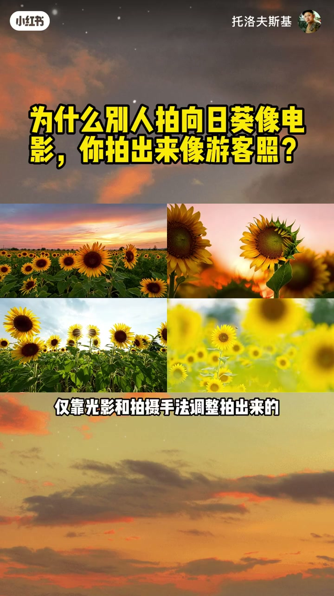
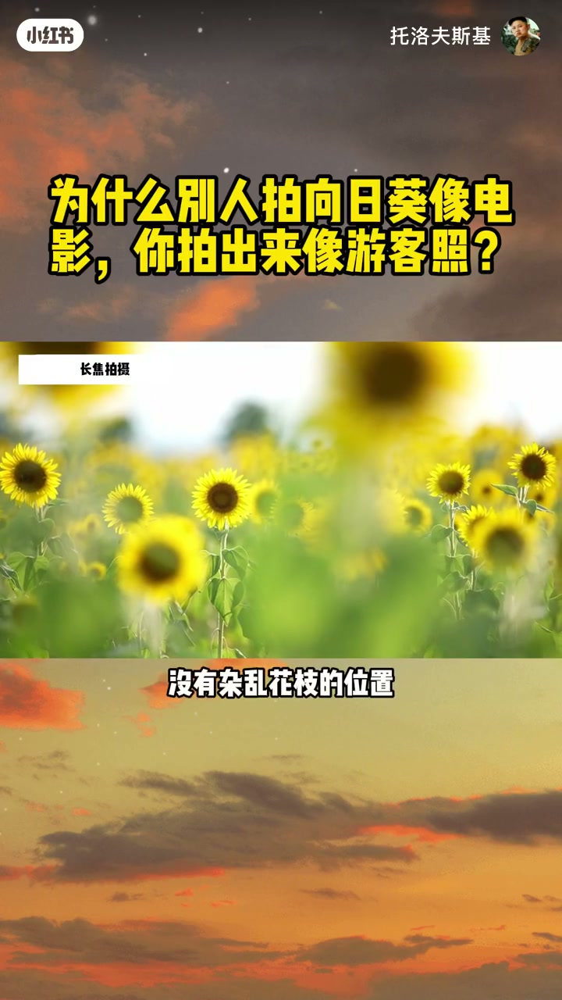
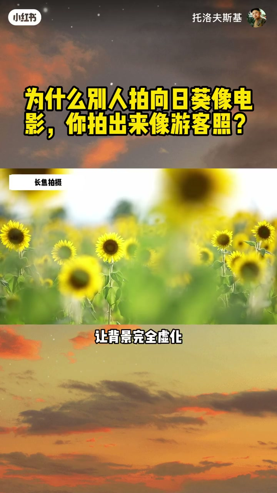
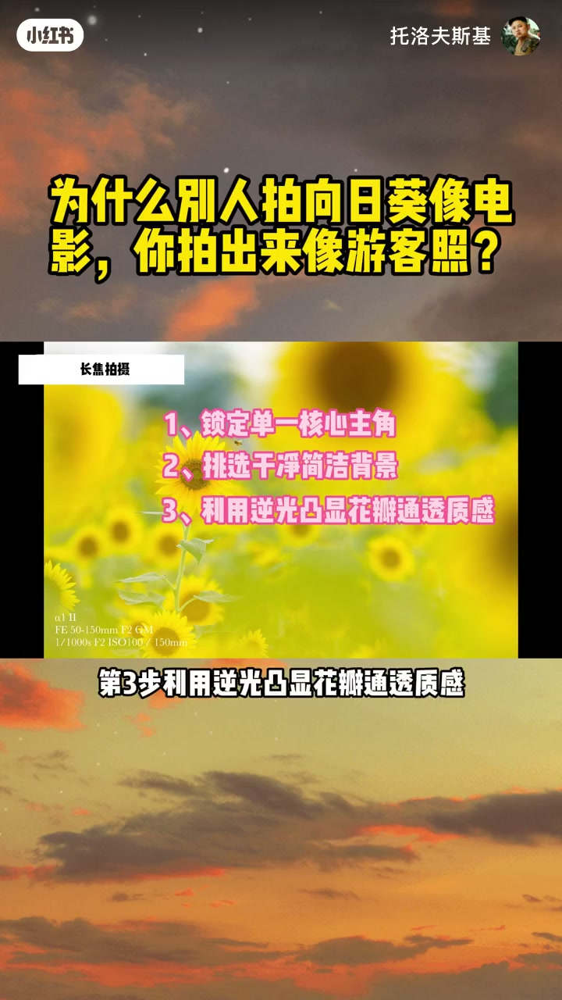
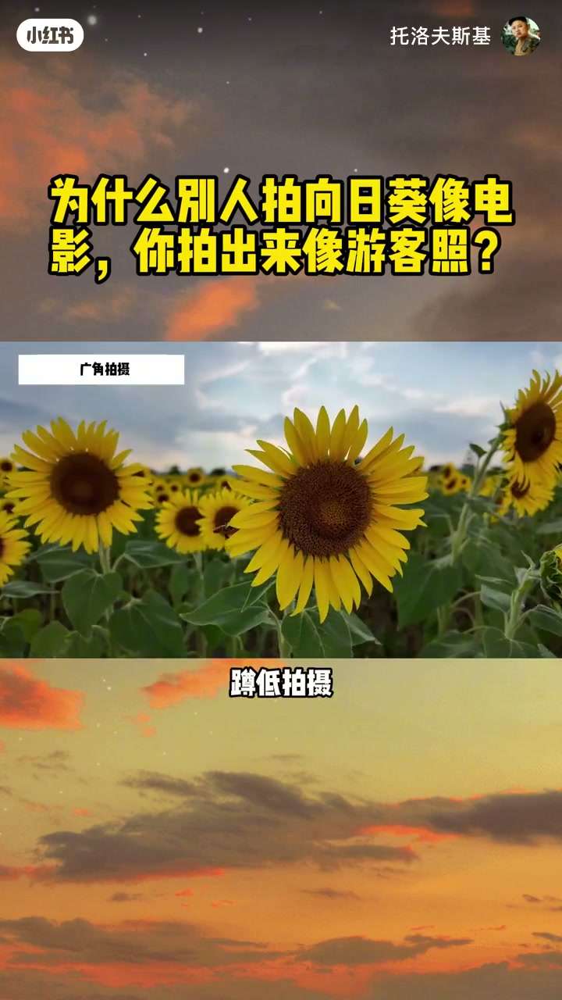
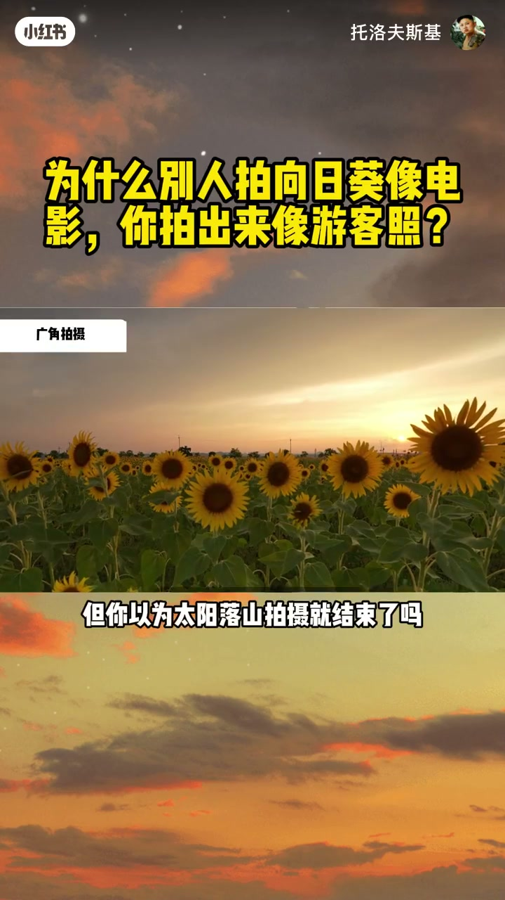
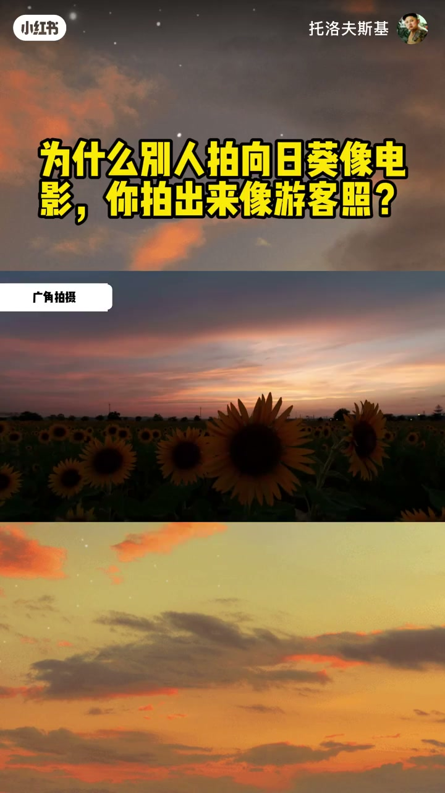
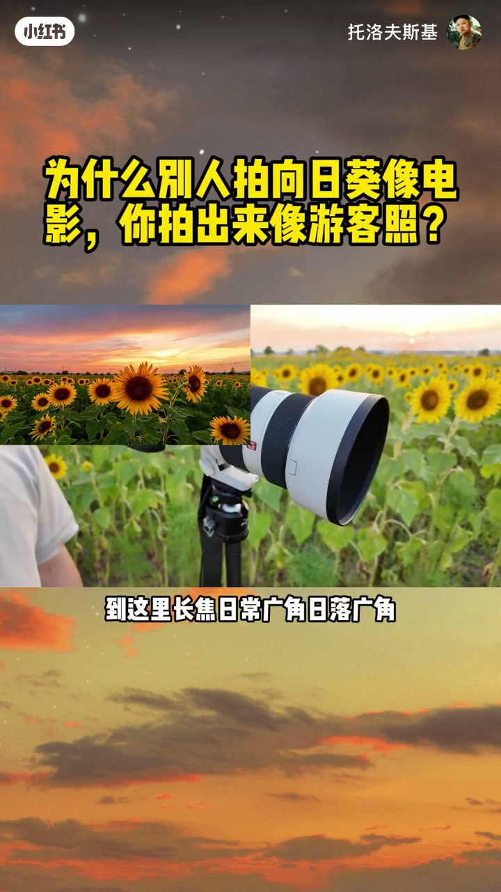
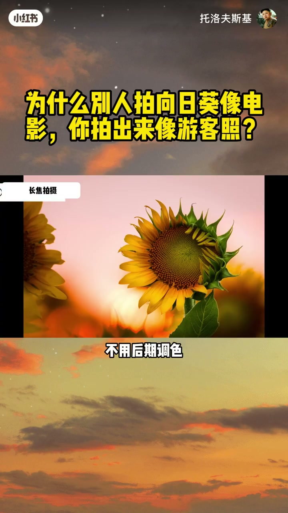
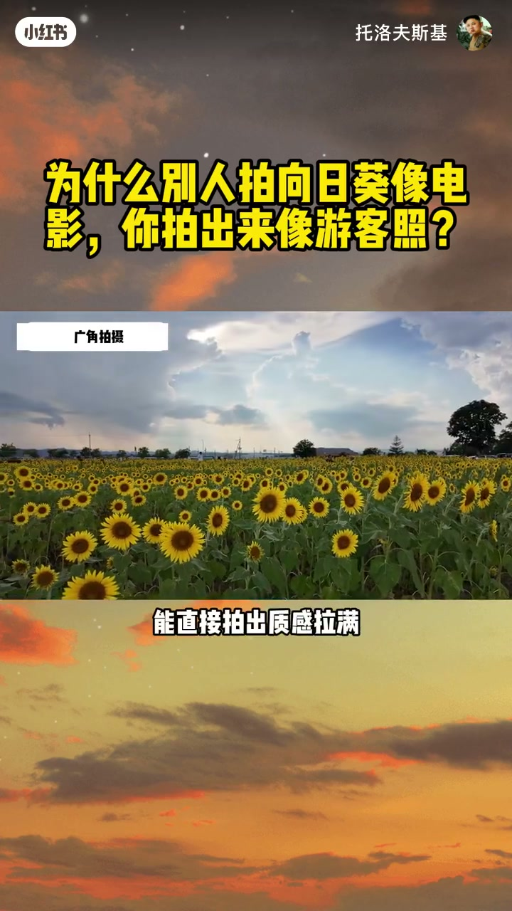

内容要点
「为什么别人拍向日葵像电影你拍出来像游客照」教程要点：为什么别人拍向日葵能拍出高级大片质感 → 氛围感直接拉满 → 而你随手一拍就是普通游客照 → 画面平平无奇 毫无质感；详见正文。
知识结构
为什么别人拍向日葵能拍出高级大片质感
接下来 教大家第二种万能拍摄手法 广角拍花
避免风吹花动
- 为什么别人拍向日葵能拍出高级大片质感
- 氛围感直接拉满
- 而你随手一拍就是普通游客照
- 画面平平无奇 毫无质感
- 同一片普通的街边花田
为什么别人拍向日葵能拍出高级大片质感
00:00–03:46为什么别人拍向日葵能拍出高级大片质感
为什么别人拍向日葵能拍出高级大片质感；氛围感直接拉满；而你随手一拍就是普通游客照；画面平平无奇 毫无质感；同一片普通的街边花田；同一个固定拍摄位置；我能拍出四种风格 质感 完全不同的成片效果；你猜这四张风格迥异的照片；中间间隔了多久拍摄；10分钟；不对；四张成片全部都是同一天 同一个机位；仅靠光影和拍摄手法调整拍出来的；真正决定照片质感和高级感的；从来不是相机设备；而是接下来我要教你的四个拍摄技巧；尤其是最后一个冷门绝杀手法；90%的摄影爱好者都会错过；直接上第一种超好用的长焦拍摄手法；先看成片效果；干净通透 主体突出 氛围感十足；这张成片我全程只做了一件核心事；用长焦镜头单点拍摄一朵向日葵；很多新手误以为长焦的作用只是虚化背景；其实长焦真正出片的核心精髓是画面剪法；精简画面元素；整张画面只保留一个核心主角；多余的杂物 杂乱花珠全部用虚化去掉；让拍摄主体瞬间从画面中跳脱出来；新手也能一键拍出干净高级的画面质感；具体操作方法超级简单；新手直接照搬即可；首先在花田里找到一株；掌势最高 花形最规整的向日葵；挑选背景干净 没有路人杂物；没有杂乱花枝的位置；再提前在镜头前方预留一朵向日葵做前景遮挡；增加画面层次感和空间感；做好这几步简单调整 不用复杂参数调试；画面的高级氛围感立刻就出来了；零基础新手也能轻松拿捏长焦拍花的核心技巧；等一下 先别急着收起相机换机位拍摄；这片普通花田再过十分钟；会呈现出完全不一样的绝美光影效果；这也是大部分人都会错过的黄金拍摄时段；日落前的柔和逆光撒在花瓣上；能让普通的向日葵花瓣自带发光质感；花瓣边缘像不像精心鲜了一圈精致的金边；这就是长焦加逆光的神仙组合；每天下午4点左右是最佳拍摄时间；光线柔和不刺眼；拍出来的花瓣通透感质感直接拉满；拍摄时尽量找一排整齐的向日葵花珠；挑选花瓣层层重叠的位置对焦；利用自然逆光角度拍摄；让背景完全虚化；形成干净柔和的纯色画布；最大程度凸显向日葵花瓣的纹理和通透质感；让原本普通的花朵瞬间精致高级；不过这还不是长焦逆光拍摄的最佳效果；学会利用自然小元素；能让你的画面直接鲜活一个档次；大家看这张成片；画面是不是瞬间灵动鲜活 充满生机；其实秘诀就一个字 等；不用刻意摆拍 不用复杂道具；静静等待蜜蜂停落在向日葵花瓣上的瞬间；按下快门即可；提前找好最佳拍摄角度；耐心等待几秒就能出片；运气好的话 还能捕捉到绝美圆形光斑；让整张照片的氛围感和层次感直接翻倍；轻松拍出别人拍不出的小众高级感；在这里 给大家总结长焦拍向日葵的万能四步口诀；新手直接寄劳照搬；第一步 锁定单一核心主角；第二步 挑选干净简洁背景；第三步 利用逆光 凸显花瓣通透质感；第四步 巧用小点缀 丰富画面细节；不过 你以为长焦拍花就只有这些基础用法吗；那你真的亏大了；长焦最炸裂 最出片的绝杀用法；我放在视频最后 新手一定要看完



03:46–07:16接下来 教大家第二种万能拍摄手法 广角拍花
接下来 教大家第二种万能拍摄手法 广角拍花；大家可以直接对比一下；左边是新手随手拍的广角废片；右边是我调整手法后的成片；你猜两张照片核心差距到底在哪；很多新手都有一个拍摄误区；觉得广角镜头就是用来拍全景；收纳更多画面元素；其实恰恰相反 长焦靠剪法出质感；广角想要高级 同样要做剪法；很多人一拿广角就乱拍全景；把电线 路人 杂乱杂草全部拍进画面；最后拍出来的照片杂乱不堪 直接沦为废片；广角拍花的核心精髓就是主动裁掉画面中；所有多余杂乱的信息；最适合新手 零门槛的出片方法就是；压低机位 蹲低拍摄；大家看这张成片；简单一个蹲低动作就能轻松拍出；前景 中景 远景三层分明的画面结构；瞬间拉开超强空间层次感；画面高级感直接拉满；不管是14毫米还是24毫米广角镜头；用这个方法都能快速找到绝佳拍摄角度；接下来 我教大家怎么拍摄广角光斑效果；具体拍摄技巧教给大家；找到两朵前后重叠的向日葵；让太阳刚好卡在两朵花的中间缝隙位置；全程压低机位 蹲低拍摄；尽量贴近花珠 把干净的天空纳入画面；裁掉地面杂乱的杂草和路人；就算是阴天没有强光；透过云层缝隙的柔光；也能拍出干净好看的自然光斑效果；日常白天拍广角向日葵；记住蹲低挡杂物；巧用阳光拍光斑；这两个技巧就足够了；很多人拍完白天的向日葵就直接收相机走人；但你以为太阳落山拍摄就结束了吗；其实一天当中最好看最初片的10分钟；在太阳落山后才刚刚开始；先给大家看日落时段的绝美成片；极致的光影质感 浓郁的氛围；妥妥的电影大片济世感；但新手直接随手拍日落向日葵；大概率会拍出前景死黑 天空过曝的废片；明暗反差极大 完全没有质感；出现这种废片的核心问题就是画面光比太大；亮部天空过曝发白；暗部花珠发黑死黑；细节全部丢失；不用慌；我教大家两个实用解决办法；新手按需选择即可；第一种方法是使用渐变ND滤镜；精准压暗画面过曝的亮部；完美保留天空的色彩和云层细节；搭配广角三层构图 以天空为背景；傍晚时分把相机白平衡调到阴影模式；画面氛围感直接拉满；不过很多新手没有配备滤镜；出门也容易忘记携带；没关系 教大家第二个零成本无道具的万能方法；效果和滤镜几乎一模一样；就是利用相机曝光包围功能；后期合成HDR画质；轻松平衡画面明暗；全程不用额外道具；手机相机也能参考这个拍摄思路；轻松拯救大光比日落画面；具体参数设置手把手教大家；新手直接照搬；打开相机曝光包围功能；参数调节到0.5-0.7EV区间；连续拍摄三张不同曝光的照片；最后后期一键合成；就能得到一张亮部不过曝；暗部不死黑；所有细节完整保留的高质量日落成片；这里重点提醒大家；拍摄日落合成画面；三脚架是必备工具



07:15–10:04避免风吹花动
避免风吹花动；画面抖动出现虚影弧片；日常拍摄中；有风花珠晃动的情况下；优先用滤镜拍摄；无风稳定环境；就用免费的HDR合成手法；两个方法互补使用；日落向日葵大片随便拍；到这里；长焦、日常广角、日落广角；三种基础拍法就全部讲完了；但我之前说的；长焦最炸裂的绝杀用法；现在正式揭晓；大家先看这张绝杀成片；超大圆圆的太阳；贴合向日葵花珠；光影氛围感直接封神；这就是90%新手都会忽略的；长焦压缩拍摄技巧；把太阳落到向日葵主体后方；利用长焦的空间压缩特性；把远处的太阳拉近放大；让太阳和花珠紧密贴合；在画面中格外醒目突出；视觉冲击力直接拉满；效果远超普通拍摄手法；这个效果已经足够惊艳；但还能再次升级进阶；大家仔细看画面边缘的绿色锯齿轮廓；光影透出来像不像熊熊燃烧的火焰；这就是拍出小众光影特效的关键；提前找准向日葵锯齿状的花瓣边缘位置；等待太阳缓缓叠在花瓣后方；让光线从花瓣缝隙中穿透出来；天然形成火焰光影效果；不用后期调色；相机直出就是高级特效大片；拍摄技巧非常简单；天亮时提前踩点；找好最佳机位和花瓣位置；等待日落时分；太阳落到适配高度；果断按下快门即可；很多人以为这种绝美光影大片；必须去新疆西藏等远方景点才能拍到；其实完全不用；你家楼下小区周边的普通花田；只要光线合适手法到位一样能拍；很多人误以为是重度后期调色；实则全部相机直出原图；这一招之所以很少有人拍到；是因为绝大多副摄影爱好者；太阳一落山就直接收拾设备离开；完美错过一天中最绝的光影时刻；大家一定要记住这个摄影真理；最好看；最出片的光影；永远在太阳落山后的十分钟里；四种向日葵拍摄技巧看似讲完；其实我还藏了一个终极大招；利用这片普通花田；结合今天教的光影和构图技巧；搭配人像拍摄思路；让人站进向日葵花田当中；能直接拍出质感拉满的电影；改人像大片；风格和纯景物照片完全不同；高级感翻倍；这招涉及专业人像用光；机位构图和光影搭配；内容干货太多；一期视频讲不完；下期专门出一期详细教程；想学习向日葵电影；改人像拍摄技巧；解锁更多花田摄影干货的朋友；记得点点关注不迷路；下期详细教学；带你零基础拍出刷爆朋友圈的；向日葵大片




口述/画面要点（40段）
结合 Whisper medium 与画面大字整理；专有名词已校对。
为什么别人拍向日葵能拍出高级大片质感
氛围感直接拉满
而你随手一拍就是普通游客照
画面平平无奇 毫无质感
同一片普通的街边花田
同一个固定拍摄位置
我能拍出四种风格 质感 完全不同的成片效果
你猜这四张风格迥异的照片
中间间隔了多久拍摄
10分钟
不对
四张成片全部都是同一天 同一个机位
仅靠光影和拍摄手法调整拍出来的
真正决定照片质感和高级感的
从来不是相机设备
而是接下来我要教你的四个拍摄技巧
尤其是最后一个冷门绝杀手法
90%的摄影爱好者都会错过
直接上第一种超好用的长焦拍摄手法
先看成片效果
干净通透 主体突出 氛围感十足
这张成片我全程只做了一件核心事
用长焦镜头单点拍摄一朵向日葵
很多新手误以为长焦的作用只是虚化背景
其实长焦真正出片的核心精髓是画面剪法
精简画面元素
整张画面只保留一个核心主角
多余的杂物 杂乱花珠全部用虚化去掉
让拍摄主体瞬间从画面中跳脱出来
新手也能一键拍出干净高级的画面质感
具体操作方法超级简单
新手直接照搬即可
首先在花田里找到一株
掌势最高 花形最规整的向日葵
挑选背景干净 没有路人杂物
没有杂乱花枝的位置
再提前在镜头前方预留一朵向日葵做前景遮挡
增加画面层次感和空间感
做好这几步简单调整 不用复杂参数调试
画面的高级氛围感立刻就出来了